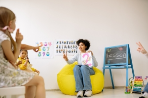
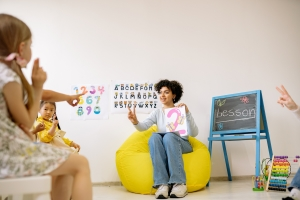
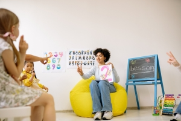

">
">
Montessori is a method of education that is based on self-directed activity, hands-on learning and
collaborative play. In Montessori classrooms children make creative choices in their learning, while the
classroom and the highly trained teacher offer age-appropriate activities to guide the process. Children
work in groups and individually to discover and explore knowledge of the world and to develop their maximum
potential.
There are a few key features that differentiate a Montessori environment from a traditional classroom: Every
class has mixed age groups so rather than grouping children according to their year of birth, the Montessori
environment groups children within their distinct phases of development. We offer freedom of choice within a
highly structured learning environment which promotes independence and self-direction within clear
boundaries . We direct rather than lecture.
Children in Montessori schools, as compared with children in the other types of school, showed significantly
greater gains on measures of executive function, reading, maths, vocabulary, and social problem-solving.
">